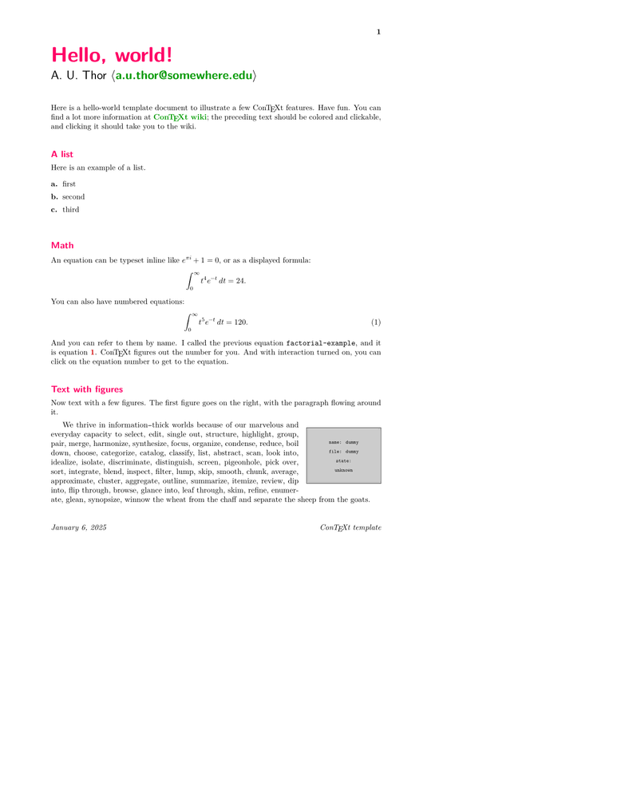
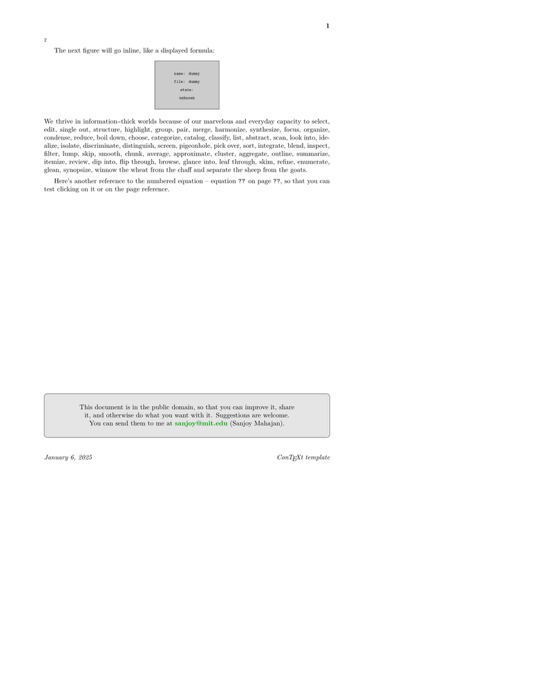

Purpose
Here is a skeleton document that illustrates several features of ConTeXt:
- Page Layout
- lists
- mathematics
- automatic cross-references
- interaction (hyperlinks)
- shaded boxes
- figure-text integration
File:Hello-world.pdf is the PDF file the 2006.12.27 version of ConTeXt produced.
Source
File:Hello-world.tex is the source (to save copying and pasting from the source below).
Words starting with a backslash (such as \starttext) are called command sequence or macros.
To mark the content to be typeset, one uses the macros
\starttext … \stoptext
To mark a headline and the content of a section, one uses the macros:
\startsection[title={…}] … \stopsection
% "Hello world!" document for the ConTeXt typesetting system % % === History === % 2006-12-29 Sanjoy Mahajan <sanjoy@mit.edu> % * Created % % This document is in the public domain (no copyright). \setupcolors[state=start] % otherwise you get greyscale \definecolor[headingcolor][r=1,b=0.4] % for the document info/catalog (reported by 'pdfinfo', for example) \setupinteraction[state=start, % make hyperlinks active, etc. title={Hello world!}, subtitle={A ConTeXt template}, author={Sanjoy Mahajan}, keyword={template}] % useful urls \useURL[author-email][mailto:a.u.thor@somewhere.edu][][a.u.thor@somewhere.edu] \useURL[wiki][http://wiki.contextgarden.net][][\ConTeXt\ wiki] \useURL[sanjoy][mailto:sanjoy@mit.edu][][sanjoy@mit.edu] % for US paper; the sensible default is [A4][A4] (A4 typesetting, % printed on A4 paper) \setuppapersize[letter][letter] \setuplayout[topspace=0.5in, backspace=1in, header=24pt, footer=36pt, height=middle, width=middle] % uncomment the next line to see the layout % \showframe % headers and footers \setupfooter[style=\it] \setupfootertexts[\date\hfill \ConTeXt\ template] \setuppagenumbering[location={header,right}, style=bold] \setupbodyfont[11pt] % default is 12pt \setuphead[section,chapter,subject][color=headingcolor] \setuphead[section,subject][style={\ss\bfa}, before={\bigskip\bigskip}, after={}] \setuphead[chapter][style={\ss\bfd}] \setuphead[title][style={\ss\bfd}, before={\begingroup\setupbodyfont[14.4pt]}, after={\leftline{\ss\tfa A. U. Thor $\langle$\from[author-email]$\rangle$} \bigskip\bigskip\endgroup}] \setupitemize[inbetween={}, style=bold] % set inter-paragraph spacing \setupwhitespace[medium] % comment the next line to not indent paragraphs \setupindenting[medium, yes] \starttext \title{Hello, world!} Here is a hello-world template document to illustrate a few \ConTeXt\ features. Have fun. You can find a lot more information at \from[wiki]; the preceding text should be colored and clickable, and clicking it should take you to the wiki. \subject{A list} Here is an example of a list. \startitemize[a] % tags are lowercase letters \item first \item second \item third \stopitemize \subject{Math} An equation can be typeset inline like $e^{\pi i}+1=0$, or as a displayed formula: \startformula \int_0^\infty t^4 e^{-t}\,dt = 24. \stopformula % don't use $$...$$ (the plain TeX equivalent) You can also have numbered equations: \placeformula[eq:factorial-example]\startformula \int_0^\infty t^5 e^{-t}\,dt = 120. \stopformula And you can refer to them by name. I called the previous equation {\tt factorial-example}, and it is equation \in[eq:factorial-example]. \ConTeXt\ figures out the number for you. And with interaction turned on, you can click on the equation number to get to the equation. \subject{Text with figures} Now text with a few figures. The first figure goes on the right, with the paragraph flowing around it. \placefigure[right,none]{}{\externalfigure[dummy]} \input tufte The next figure will go inline, like a displayed formula: \placefigure[here,none]{}{\externalfigure[dummy]} \input tufte Here's another reference to the numbered equation -- equation \in[eq:factorial-example] on \at{page}[eq:factorial-example], so that you can test clicking on it or on the page reference. % most plain TeX commands work \vfill \noindent \framed[corner=round, width=\textwidth,height=1in, backgroundcolor=gray,background=color] {This document is in the public domain, so that you can improve it, share it, and otherwise do what you want with it. Suggestions are welcome. You can send them to me at \from[sanjoy] (Sanjoy Mahajan).} \stoptext
Output
This document looks like this:
- 
- 